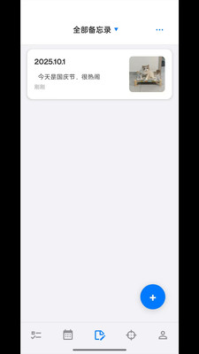

Reminder 用了四个月，当初被"四模块打通"吸引，现在来说说哪些真能用起来了
装 Reminder 到现在四个多月，从一开始被待办、备忘、日历、OKR 全打通的卖点打动，到后来慢慢磨出真实使用节奏——有些功能成了每天离不开的习惯，有些当初觉得会常用的模块基本闲置了。
装 Reminder 到现在四个多月，当初是在它的官网看到四模块打通的卖点才决定试试。想着总不能同时装滴答清单、Notion 和一个日历 App 吧，直接从官方下载拿了安装包。说实话第一天用的时候没什么惊喜，界面也算清爽，但富文本编辑器那一排按钮在小屏幕上挤得有点密，我一度怀疑这会不会又是"功能全但没一个好用"的那种。
越用越顺手的：备忘录和待办的联动
这个是真没预想到。Reminder 的备忘录不是独立的"随手记"，每条备忘可以直接关联到一条待办——比如我建了一篇"下周产品评审要点"的备忘，然后关联到"周三下午产品评审"那条待办，点开待办就能看到备忘，切到备忘也能看到它挂在哪条待办下面。一开始我没当回事，觉得不就是个跳转吗？但慢慢发现这解决了我长期的一个坏习惯：以前用其他待办 App，每次开会或做方案之前，我都得在待办 App 和笔记 App 之间来回切找资料，现在这些资料直接跟着待办走了，点进去就有。
富文本格式也比我预期的实用。不是说它功能有多强大——加粗斜体、标题层级、列表、引用块，这些是标配，但关键是移动端能稳定编辑、不会卡。有次我写了一篇五百多字的会议纪要，全用三级标题分节、重点加粗、待办事项列成有序列表，写完在手机上扫读一遍感觉比用纯文本舒服多了。

分类标签也是个慢慢习惯的东西。Reminder 的备忘和待办共用同一套分类体系——"工作""生活""读书计划"这些标签两边都能用。一开始我觉得标签多了反而乱，就只分了"要做"和"资料"两类。后来统计报告里能看到"哪个分类下备忘最多"，突然意识到这个数据有用：某个分类备忘堆了一大堆但待办很少，说明我光收集没落地；某个分类待办很多但备忘几乎没有，说明我做事太糙没留资料。现在我给备忘和待办打标签已经是条件反射了。
越用越烦的：国产 ROM 杀后台
这个坑我踩了大概三次才总结出套路。Reminder 是 React Native 跨平台框架开发的，后台保活能力比原生应用弱一些，加上小米、华为这些国产系统自带的省电策略，它特别容易被系统干掉。最开始的症状是到点没弹窗、没声音、没震动，我以为是应用 bug，重启了几次 Reminder 没用，后来直接重启手机才好。第二次又犯，我开始翻Reminder文档才知道要把它加进电池白名单，还要打开自启动权限。第三次——对，我第三次踩了同一个坑——是换了一台手机，系统默认设置又把它砍了。
现在我知道了：新手机装 Reminder 第一件事不是注册账号，是先去设置里把电池优化设为"不受限制"、自启动打开、通知权限逐项检查一遍。跑一遍应用内的测试提醒——建一条"2 分钟后"的待办，锁屏等，能响才算配置完成。这一步跳过的话，后面大概率会在某个重要提醒上翻车。
还有 DND 和专注模式的干扰。我习惯了开专注模式工作，后来发现 Reminder 的提醒在专注模式下会被屏蔽——不是 Reminder 的问题，是系统层面的勿扰模式一刀切。现在我会提前看一眼专注模式的白名单，把 Reminder 加进去，不然到点没响还得重新排查半天。
碰都没碰的：OKR 模块
当初被"四模块全打通"吸引进来，但四个月下来 OKR 模块基本没打开过一次。不是功能不好——Reminder 说自己内置了完整 OKR 链路，从设定目标到关键结果跟踪都有——而是我个人的工作节奏里，OKR 这种东西更适合团队层面的协作，自己一个人做还不如待办清单实在。也许对有 OKR 习惯的人来说它是卖点，但对我来说这是当初高估的那块。
离不开的：到点提醒和日程视图
这块没什么悬念——到点提醒是 Reminder 的核心，也是我每天离不开的。配置好权限之后它没再让我失望过，什么下午三点开会、周五下班前交周报，都能准时弹窗响铃。日历视图里还带农历和节气，虽然我不太过农历，但偶尔看看节气变化也挺有意思。
观感修正：当初觉得"四模块打通"是加分项，现在觉得不是
四个月用下来最大的认知变化就是：当初我以为"待办 + 备忘 + 日历 + OKR 在一个 App 里"是 Reminder 的核心优势，但实际上真正让我留下来的是待办和备忘之间那一点点联动——不是模块越多越好，是那两个模块真的打通了。OKR 模块对我来说是冗余的，日历视图我也主要拿来查农历，真正高频的就是待办 + 备忘这一对。
所以如果你在考虑 Reminder，别被"四大模块"吓到——大概率你只会用其中两三个，没关系，能用起来的那些才是有价值的。
去留结论
短期不会卸载。待办和备忘的联动已经成了工作流里的固定环节，换其他 App 得重新适应。但如果出现下面几种情况我会考虑换：一是 iOS 端一直不出，哪天我换了 iPhone 就必须找跨平台的替代；二是 OKR 模块我还是没用起来，Reminder 如果哪天主打这个、把核心功能做薄了，那就不是我要的了；三是国产系统杀后台的问题越来越严重，Reminder 如果本身不增强保活能力、全靠用户手动配置，那也够折腾。
总的来说这四个月的体验是"过日子"的感觉——没有惊艳的时刻，也没有让我忍无可忍的缺陷。就像一件穿久了的衣服，不会天天想着它，但没了还真不习惯。关于 Reminder 的更多参考资料，我在GitHub、Gitee 和 GitCode 都放了一份，主要是考虑到国内访问速度和备份冗余。